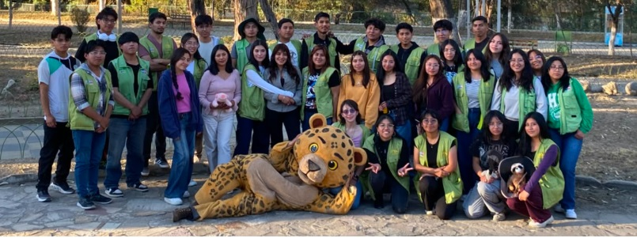

¿Que es el Bioparque Vesty Pakos?
Vesty Pakos es un centro de custodia en la categoría de bioparque. Es muy importante tener en cuenta esta palabra “bioparque”, ya que tiene una amplia diferencia con la idea de zoológico que comúnmente evoca imágenes de animales en espacios para el entretenimiento humano. Sin embargo, un bioparque desafía todas estas percepciones arcaicas y adopta un enfoque educativo y de conservación progresista. Acá los animales no son meras atracciones, sino embajadores de sus respectivas especies y vidas. Esta nueva forma de entender el cuidado y conservación de los animales nos ayuda a estar conscientes de la importancia de su existencia para la naturaleza y para nuestro ecosistema. El administrador de los voluntarios, Fernando de la Barra, destaca el papel fundamental de esta institución en la educación ambiental, que es una de las prioridades a seguir difundiendo en nuestro municipio. Para lograr este objetivo, el bioparque tiene una triple misión: la custodia responsable de animales rescatados, la creación de entornos adecuados para su desarrollo natural y la sensibilización pública sobre la importancia de la conservación. El Vesty Pakos abre sus puertas a la comunidad local, ofreciendo una gran variedad de actividades como programas especiales los fines de semana y feriados para difundir la importancia de la conservación.